agile life
что это?
— это философия, в которой
ГИБКИЕ ПРИНЦИПЫ
применяются не только в работе, но и в повседневной жизни.
это означает постоянное улучшение, адаптацию к изменениям и фокус на важных задачах в каждый момент времени.
вместо строгого планирования на долгие периоды agile
life предлагает работать короткими спринтами, регулярно
анализировать результаты
и корректировать курс.
принципы agile life можно применять в работе, учебе,
личных целях и даже отдыхе, чтобы жить осознанно и
эффективно.
КАК AGILE LIFE РЕАЛИЗОВАН
В SPRINTLY

СПРИНТЫ
— короткие циклы работы,
после которых идет анализ
результатов.
ГИБКОСТЬ
— возможность менять фокус,
если приоритеты изменились.
ПРОСТОТА
— минималистичный подход
без лишнего хаоса.
ГЛАВНЫЙ ПРИНЦИП:
ЖИЗНЬ — ЭТО НЕ ЖЕСТКИЙ ПЛАН,
А ПРОЦЕСС, КОТОРЫЙ МОЖНО
УЛУЧШАТЬ И АДАПТИРОВАТЬ.
откуда взялась методика?
Agile Life вдохновлена гибкими методологиями управления проектами, такими как Agile и Scrum, которые изначально применялись в разработке ПО. Эти подходы помогали командам адаптироваться к изменениям, работать короткими циклами (спринтами) и постоянно улучшать процессы.
как это перешло в жизнь?
Со временем люди заметили, что гибкие принципы работают не только в бизнесе, но и в личном планировании. Мы все сталкиваемся с изменяющимися обстоятельствами, новыми целями и корректировкой планов. Agile Life берет лучшее из Agile, адаптируя его к повседневным задачам: учебе, работе, хобби, личному развитию.
добро пожаловать в пространство гибкого планирования. здесь ты создашь свой спринт — персональный план на определенный срок, который поможет тебе двигаться к важным целям без перегрузки и хаоса.
не просто составляем список дел — мы выстраиваем систему, которая делает жизнь осознаннее и продуктивнее. следуй шагам, адаптируй их под себя и наблюдай, как маленькие действия приводят к большим результатам!
01
ВЫБОР ДЛИТЕЛЬНОСТИ СПРИНТА
для начала реши, на какой срок ты хочешь
спланировать свою жизнь. ты можешь выбрать:
МЕСЯЦ
— если хочешь сфокусироваться на конкретных задачах и быстро увидеть первые результаты.
ТРИ МЕСЯЦА
— идеальный вариант для достижения среднесрочных целей и формирования привычек..
ПОЛГОДА
— стратегический подход, который поможет внедрить большие изменения в жизнь.
выбирай срок, который тебе комфортен. спринт — это не жесткие рамки, а гибкий инструмент. ты всегда можешь пересмотреть планы и скорректировать их по ходу.
02
КОЛЕСО БАЛАНСА:
ОЦЕНИ СВОЮ ЖИЗНЬ
перед тем как ставить цели, важно понять, насколько сбалансирована твоя жизнь.
для этого мы используем инструмент «колесо баланса».

КАК ЭТО РАБОТАЕТ?
1. раздели свою жизнь на 6–8 ключевых сфер (например:
работа, здоровье, финансы, саморазвитие, отношения,
отдых и т. д.).2. оцени каждую сферу по шкале от 1 до 10, где 1
— неудовлетворенность, а 10 — полный порядок.3. представь это в виде круга: чем ровнее
и гармоничнее колесо, тем сбалансированнее твоя жизнь.📌пример: если ты ставишь цель выучить новый язык,
но при этом твоя сфера «здоровье» на низком уровне
(например, не хватает сил и энергии), скорее всего,
достичь этой цели будет сложнее.
после заполнения колеса баланса ты сможешь
осознанно выбрать приоритетные направления, которые
действительно сделают твою жизнь лучше.
03
ФОРМИРОВАНИЕ СПИСКА
ЦЕЛЕЙ И ЖЕЛАНИЙ
теперь время сформулировать твои цели.
на этом этапе важно разделить их на два типа:
ЦЕЛИ
ЖЕЛАНИЯ
— конкретные, измеримые
задачи, которые ты хочешь
выполнить в этом спринте.
— вещи, которые
вдохновляют и наполняют
жизнь радостью.
💡 совет: не бойся
включать в список
амбициозные идеи!
даже если кажется,
что что-то сложно
реализовать, спринт
можно корректировать
— в этом и есть суть
гибкого подхода.
• пример: пройти онлайн-курс
по UX-дизайну и выполнить
финальный проект.
• пример: путешествовать
в новое место хотя бы раз
за этот спринт.
04
РАЗБИВКА ЦЕЛЕЙ НА СРОКИ
чтобы не перегружать себя и не откладывать все
на последний момент, раздели цели на удобные этапы.
1.возьми каждую цель
и определи, какие шаги
нужны для её выполнения.
2.разбей их на конкретные
задачи с учетом выбранного
срока спринта.
3.распредели задачи
по неделям или месяцам,
чтобы было понятно,
что делать в каждый период.
📌пример:цель:запустить личный блог
неделя 1:придумать концепцию и темы постов
неделя 2:оформить соцсети и написать первые 3 поста
неделя 3:начать продвигать контент и анализировать отклик
такой подход помогает избежать перегрузки и прокрастинации
— ты всегда знаешь, что делать дальше.
05
СОСТАВЛЕНИЕ ЛИЧНОГО ГРАФИКА
теперь пора встроить цели в твою повседневную жизнь.
задача сделать график на стандартную неделю, учитывая твои цели и
выделяя на них время. чтобы лучше фокусироваться на задачах, дели
день на блоки, например, «семейный» или «рабочий».
MONDAY
7:30 подъем
8:00 зарядка
8:30 завтрак
9:00 проверка чатов
TUESDAY
13:00 английский
14:00 обед
15:00 совещание
16:00 съемка контента
WEDNESDAY
19:30 ужин с семьей
21:00 чтение
22:00 ванна
23:00 отход ко сну
также добавь буферное время каждый день, на случай,
когда все пойдет не по плану
теперь встрой каждый шаг цели в календарь месяца
или календарь времени спринта
